My Zini Digital ERP mein School Transport, Bus Routes aur Drivers Kaise Manage Karein? (Complete Hinglish Guide)
School bus, van aur cab operations ko bina kisi galti ke chalana har school admin ke liye ek badi zimmedari hoti hai — kis route par kaunsi van jaa rahi hai, driver ka Driving Licence aur Aadhar verified hai ya nahi, kaunse students kis bus mein aate hain, aur driver ko monthly salary milni hai ya per-student-per-day commission. In sabhi cheezon ko ek hi screen par manage karne ke liye My Zini Digital ERP mein Transport FLEET (/transport) module diya gaya hai. Is Hinglish guide mein humne live portal par har button, Add New Driver modal, 3 Salary Schemes, Profile & Students roster aur Fleet filters ko test karke poora walkthrough banaya hai.
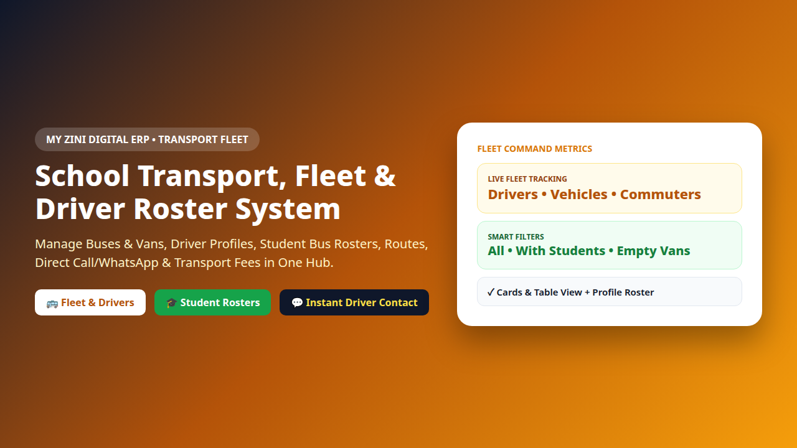
⚡ TL;DR — Quick Summary (AI & Reader Snapshot)
- Route: Sidebar mein
Transport(https://myzini.digitalerp.shop/transport). - 3 Live KPI Cards: Total Drivers (Registered staff), Assigned Students (On school commute), aur Fleet Vehicles (Active bus & vans).
- Add New Driver Modal: 4 sections — Personal & Contact (Aadhar, Driving Licence, App Login Password), Vehicle & Route Assignment, 3 Salary Schemes (No Automatic Scheme, Monthly Fixed Salary, Per Student Per Day Rate), aur Driver/Van Photos.
- Driver Card & Drawer: Unique
DRIVER-...ID, direct Call +💬WhatsApp icon, aurProfile & Students(2 tabs:🎓 Assigned Students&💰 Salary & Ledger+Assign Students). - Views & Filters:
Cards/Tableview, Search (driver, van number, mobile, route), aur 3 Pills (All Fleet,🚌 With Students,Empty Vans).
1. Transport FLEET Page Overview aur 3 Live KPI Cards
Jaise hi aap left sidebar se Transport par click karte hain, aapke saamne Transport FLEET dashboard khul jaata hai jiska tagline hai: "Manage school fleet, driver profiles, student bus rosters & routes". Top bar par aapko Refresh, Cards / Table toggle aur Add New Driver button milta hai.
👨✈️ TOTAL DRIVERS
Registered staff — aapke school fleet mein kul kitne drivers registered hain.
🎓 ASSIGNED STUDENTS
On school commute — kul kitne bachche kisi na kisi school bus/van se mapped hain.
🚌 FLEET VEHICLES
Active bus & vans — school ke total active transport vehicles ki sankhya.

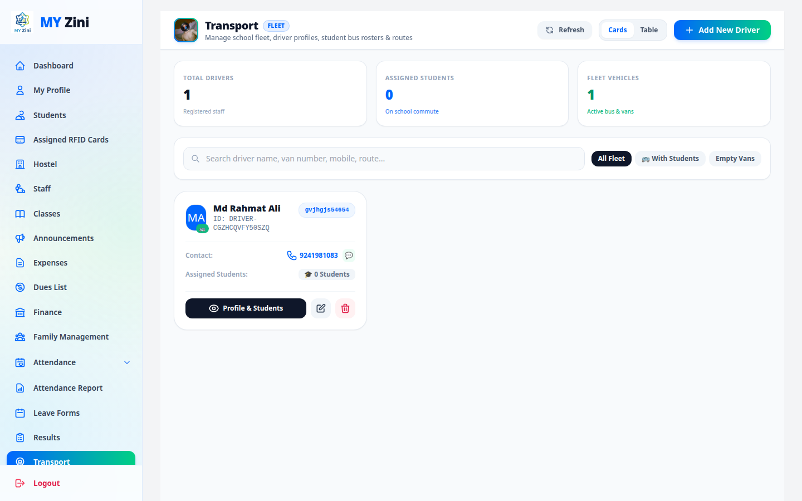
2. Add New Driver: Naya Driver, Vehicle, Route aur Salary Scheme Kaise Set Karein?
Top-right mein Add New Driver par click karne par ek comprehensive 4-section modal khulta hai: "Register a new driver, assign van details, and configure salary".
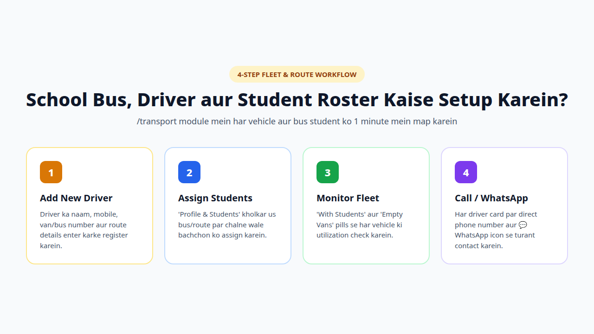
- 👤 PERSONAL & CONTACT DETAILS:
Full Name *(e.g. Ramesh Kumar),Mobile Number *(10-digit),Email / Gmail (Optional),App Login Password(Driver App login ke liye),Aadhar Number(12-digit),Driving Licence Number(DL-XXXXXXXXXXXX), aurResidential Address. - 🚌 VEHICLE & ROUTE ASSIGNMENT:
Vehicle / Van Number *(placeholder:e.g. DL-01-AB-1234 / Van #4) aurRoute / Area Coverage(placeholder:e.g. North Sector → City Center → School). - 💰 SALARY & COMPENSATION SCHEME:
Salary Base Typedropdown mein 3 powerful options milte hain: 1) No Automatic Scheme, 2) Monthly Fixed Salary, aur 3) Per Student Per Day Rate (contract vans ke liye best!). - 📸 PHOTOS & DOCUMENTS:
Driver PhotoaurVan / Bus Photo— dono ke liye URL paste karne ya📸 Uploadse file choose karne ka option milta hai.
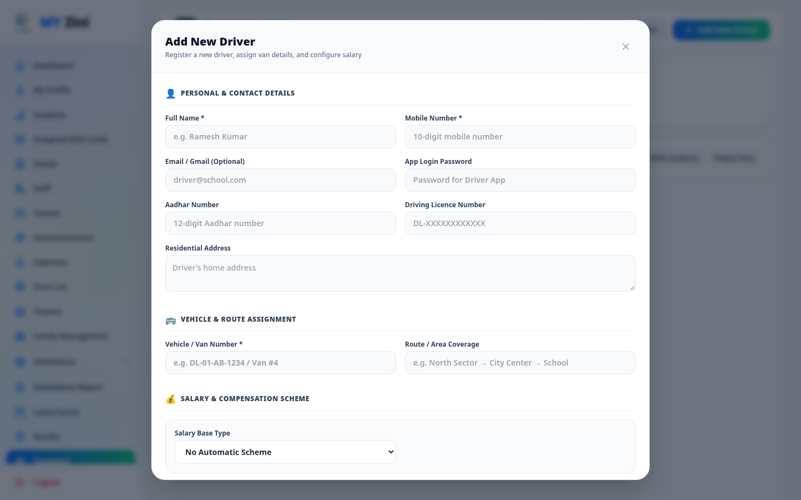
3. Profile & Students Drawer: Bus Roster Mapping aur Salary Ledger
Har driver card ke bottom par Profile & Students button milta hai (jaise Md Rahmat Ali • ID: DRIVER-CGZHCQVFY50SZQ). Is par click karne par driver ka detailed management drawer khulta hai jisme aapko neeche diye gaye controls milte hain:
- Edit Button: Driver ka mobile number, van number, route ya salary scheme kabhi bhi update karein.
- 🎓 Assigned Students Tab: Us vehicle par map kiye gaye sabhi bachchon ki list aur naye bachchon ko jodhne ke liye Assign Students button.
- 💰 Salary & Ledger Tab: Driver ki monthly salary, per-student payout aur advance/payment history ek hi jagah track hoti hai.
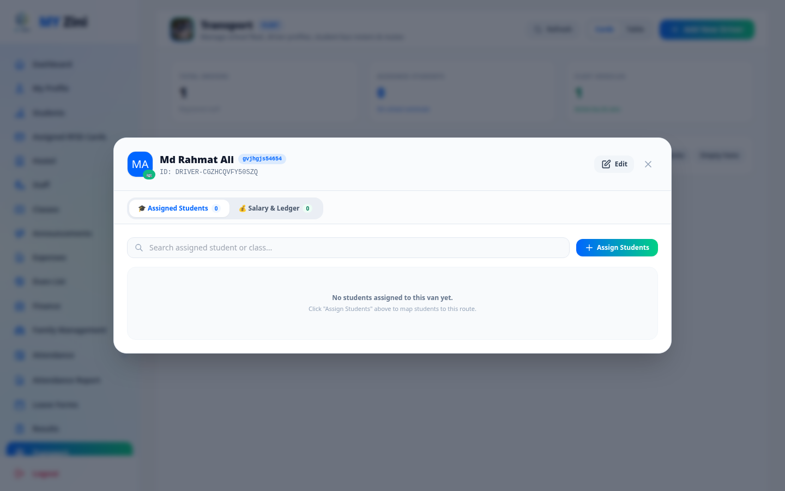
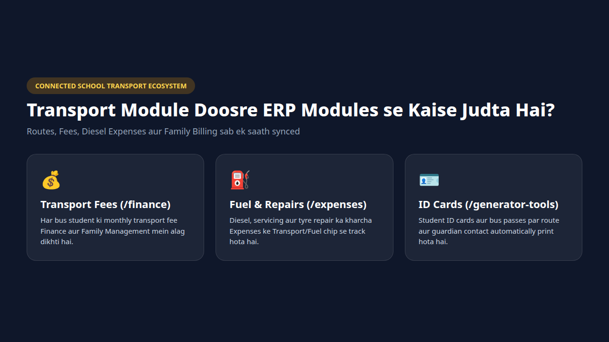
4. Cards vs Table View, Fleet Filters, Live Search aur Mobile View
Bade schools mein jahan 15–30 buses chalti hain, wahan fleet manager ke liye Table view, With Students / Empty Vans filters aur multi-field Search (Search driver name, van number, mobile, route...) bahut kaam aate hain.
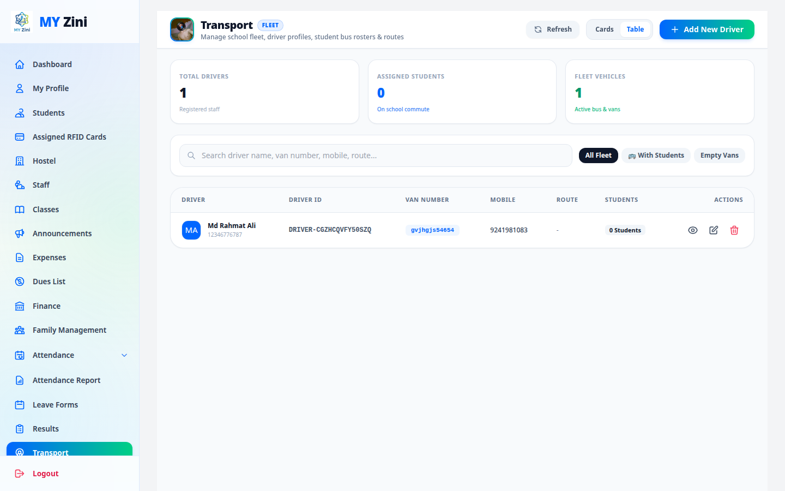
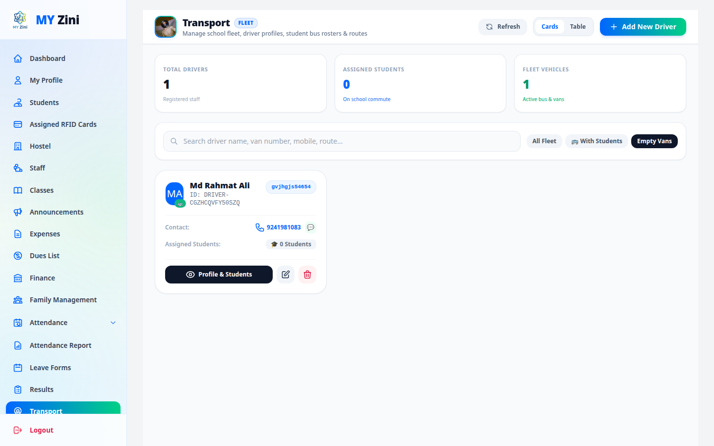
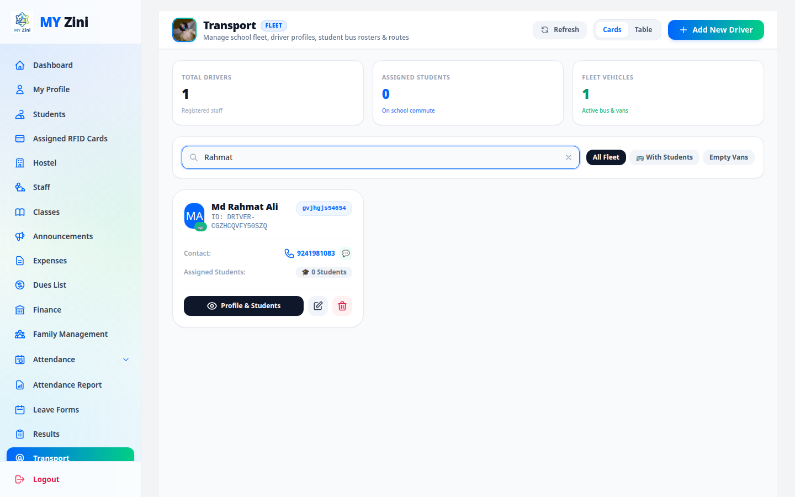
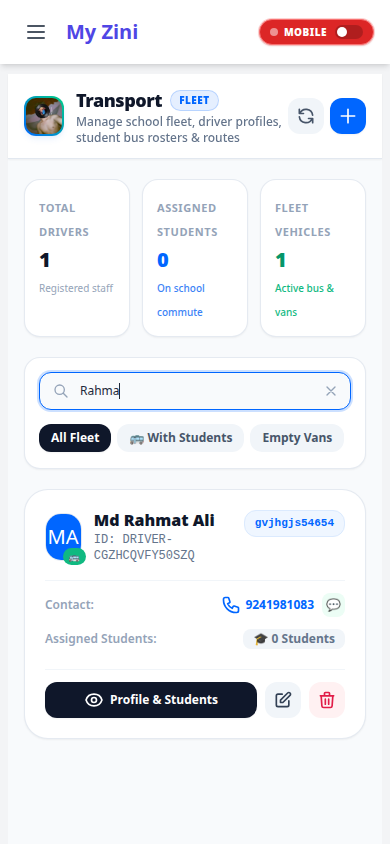
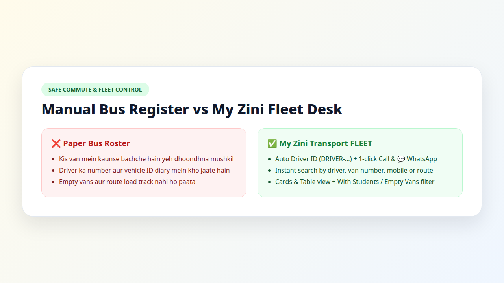
Quick Reference Table: /transport Module Cheat Sheet
| Feature / Control | Exact UI Element | Kya Kaam Karta Hai? |
|---|---|---|
| Driver Registration | Add New Driver | Aadhar, DL, Van No., Route, Salary Scheme aur Photos save karna |
| Salary Schemes | Salary Base Type | No Scheme, Monthly Fixed Salary, ya Per Student Per Day Rate |
| Bus Roster | Profile & Students → Assign Students | Students ko specific driver aur van route se map karna |
| Instant Contact | Phone Link + 💬 Icon | Driver ko seedha phone call ya WhatsApp message bhejna |
| Fleet Filters | All Fleet, 🚌 With Students, Empty Vans | Active buses aur khali vans ko alag filter karna |
Frequently Asked Questions (FAQs)
1. "Per Student Per Day Rate" salary scheme ka use kab hota hai?
Bahut se schools private van ya auto drivers ko fixed salary ke bajaye har bachche ke rozana commute ke hisab se payment karte hain. Per Student Per Day Rate chunnne par system assigned students ke hisab se driver ka payout calculate karne mein madad karta hai.
2. Kya Driver ko apna alag App Login Password milta hai?
Haan! Add New Driver form mein Email / Gmail aur App Login Password fields diye gaye hain taaki driver apne phone se apna assigned student roster aur route list dekh sakein.
3. "Empty Vans" filter kis kaam aata hai?
Jab aap naya session shuru karte hain ya nayi van kharidte hain, toh Empty Vans pill par click karke aap turant dekh sakte hain ki kaunsi buses abhi khali hain jahan naye students assign kiye ja sakte hain.
4. Driver ka Aadhar aur Driving Licence number save karna kyun zaroori hai?
School transport safety guidelines aur RTO/Police verification ke liye har driver ka 12-digit Aadhar Number, Driving Licence Number (DL-XXXXXXXXXXXX), aur Driver/Van Photo digital record mein hona anivarya aur surakshit hota hai.
5. Kya Driver card se seedha WhatsApp message bheja ja sakta hai?
Haan! Har driver card par unke mobile number ke theek bagal mein ek green 💬 (WhatsApp) button diya gaya hai. Is par click karte hi us driver ki WhatsApp chat khul jaati hai — kisi emergency ya route change ke waqt turant contact karne ke liye best hai.
6. Transport Fees (/finance) aur Bus Routes (/transport) kaise linked hain?
/students mein jab aap student ki monthly Transport Fee set karte hain, toh woh /finance (Transport Fees tab), /dues-list, aur /family-management (TRANSPORT column) mein sync hoti hai, jabki /transport aapke driver, van number aur route roster ko manage karta hai.
7. Bus diesel aur servicing ka kharcha kahan record karein?
Aap Expenses (/expenses) module mein ⛽ Transport / Fuel aur 🛠️ Repairs & Maintenance Quick Suggestions use karke har bus ka diesel aur servicing bill vehicle number ke saath save kar sakte hain.
8. Agar kisi driver ki van badal jaaye ya route change ho toh kya karein?
Aap us driver ke card par Profile & Students kholkar top par maujood Edit button dabayein. Wahan se aap naya Vehicle / Van Number aur Route / Area Coverage turant update kar sakte hain bina students ko dubara assign kiye.
9. Apne school ke liye My Zini Digital ERP kaise shuru karein?
Aap Digital ERP Registration Form par jaakar sirf ₹100 Registration Fee ke saath apna school register kar sakte hain aur Transport Fleet management shuru kar sakte hain.
10. Kya Table view mein sabhi drivers aur vans ek saath dikh jaati hain?
Haan, jab fleet mein 10 se zyada buses hon, toh Table view par click karke aap sabhi drivers, unke ID, vehicle numbers, phone numbers aur assigned student count ko ek compact list mein dekh sakte hain.
11. Search box mein kis-kis cheez se driver dhoondha ja sakta hai?
Search bar mein aap 4 cheezon se search kar sakte hain: Driver Name, Van / Vehicle Number, Mobile Number, ya Route / Area Name (e.g. North Sector).
12. Kya kisi student ko ek van se hata kar doosri van mein shift kar sakte hain?
Bilkul! Aap purane driver ke Profile & Students mein jakar us student ko unassign kar sakte hain aur naye driver ke Assign Students modal se us student ko naye route par map kar sakte hain.
13. Driver aur Van ki photos upload karne ka kya fayda hai?
Driver photo aur Van/Bus photo portal par save rehne se naye security guards, transport coordinators aur parents ke liye bus aur driver ki pehchan karna aasan ho jaata hai, jisse school campus safety badhti hai.
14. Kya bus delay hone par parents ko ek click mein notice bhej sakte hain?
Haan! Announcements (/announcements) mein jakar aap Timing Change ya Urgent Notice preset chunn kar aur affected students ko select karke 15 seconds mein push notification bhej sakte hain.
15. "Monthly Fixed Salary" aur "No Automatic Scheme" mein kya antar hai?
Agar aapka driver school ka permanent employee hai jise har mahine ek fixed salary (jaise ₹14,000/month) milti hai, toh Monthly Fixed Salary chunein. Agar aap driver ko manual voucher ya ad-hoc contract par payment karte hain, toh No Automatic Scheme select karna sabse sahi rehta hai.
16. Har Driver ko milne wala unique ID (e.g. DRIVER-CGZHCQVFY50SZQ) kahan kaam aata hai?
Yeh unique system ID har driver ka digital identity code hota hai, jo internal audit, salary ledger reconciliation, aur driver app authentication ke waqt duplicate records se bachata hai. Chahe school mein ek hi naam ke do drivers hon, unke Driver ID aur Mobile Number hamesha alag rehte hain.
17. "🚌 With Students" filter pill ka use kab aur kaise karein?
Jab aap subah-subah active running routes ka review kar rahe hon, toh 🚌 With Students pill par click karne par sirf wahi vehicles screen par dikhti hain jinmein kam se kam ek student assigned hai. Isse aapko reserve ya khadi hui vans ko ignore karke sirf active fleet par focus karne mein madad milti hai.
18. Kya Driver ka App Login Password baad mein reset kiya ja sakta hai?
Haan bilkul! Agar koi driver apna password bhool jaaye ya school chhod kar jaaye, toh Admin turant Profile & Students → Edit mein jakar unka App Login Password change ya revoke kar sakte hain taaki school data 100% secure rahe.
19. Transport students ke Bus Pass aur ID Card kaise print karein?
Aap Generator Tools (/generator-tools) mein jakar ID Card Generator ka use kar sakte hain. Wahan aap student ki class aur details ke saath bus route aur guardian contact number print karke laminate karwa sakte hain — jo chhote bachchon ki safety ke liye bahut zaroori hai.
20. Kya Transport Fees ko Family Management (/family-management) mein alag se dekha ja sakta hai?
Haan! Family Management ke sibling breakdown table mein TRANSPORT ka ek dedicated column hota hai. Agar ek hi parivaar ke do bachche school bus se aate hain, toh dono ki transport fee aur payment status ek hi WhatsApp Family Statement mein parent ko dikh jaati hai.
21. Bus aur Van ka insurance/fitness aur maintenance expense kahan track karein?
Aap Expenses (/expenses) module mein jakar ⛽ Transport / Fuel aur 🛠️ Repairs & Maintenance Quick Suggestions use karein aur Vendor Notes mein bus number (jaise DL-01-AB-1234 | Insurance Renewal) likhein. Isse saal bhar ka per-vehicle kharcha ek search mein nikal aata hai.
22. Kya Transport module mein "Refresh" button dabane se live count update hota hai?
Haan, agar aapne abhi-abhi /students ya kisi doosre tab se naye students ko transport assign kiya hai, toh /transport ke top-right mein maujood Refresh button dabate hi Total Drivers, Assigned Students aur Fleet Vehicles ke KPI numbers turant update ho jaate hain.
23. Kya har van ya bus ki seat capacity aur route stops ko notes ya route field mein likh sakte hain?
Haan bilkul! Route / Area Coverage field mein aap poora pickup-drop sequence likh sakte hain — jaise North Sector (7:15 AM) → City Center (7:30 AM) → Railway Station → School. Isse naye substitute driver ya parent ko bhi exact stop timing aur route path ek nazar mein samajh aa jaata hai.
24. Agar koi student mid-session mein school bus chhod de toh transport fee kaise band karein?
Sabse pehle driver ke Profile & Students roster se us student ko unassign karein, aur phir /students mein jaakar us student ki monthly Transport Fee ₹0 update kar dein. Isse agle mahine se unke fee ledger mein transport charge nahi judega aur purane mahinon ka hisab safe rahega.
25. Kya Data Center (/data-center) se poore Transport aur Students ka backup export hota hai?
Haan! Data Center (/data-center) aur /students ke Export tools ke through aap kabhi bhi apne school ke poore records ko Excel (XLSX), CSV ya JSON format mein download karke offline backup rakh sakte hain.
26. Kya GPS na hone par bhi My Zini Transport module school ke liye kaam aata hai?
Bilkul! Chhote aur medium schools mein bina mehenge GPS hardware ke bhi driver KYC, student bus roster, route mapping, fee tracking aur 1-click WhatsApp/Call coordination poori tarah digital ho jaata hai.
Real School Scenarios: Transport FLEET ka Daily Use
1. Naya Bus Route Launch Karna
Naye session mein jab naya route shuru ho, toh Add New Driver se driver + vehicle + route register karein aur Assign Students se us area ke sabhi bachche 2 minute mein map kar dein.
2. Morning Breakdown / Delay Coordination
Agar kisi van mein puncture ya traffic jam ho jaaye, toh Transport In-charge mobile par /transport kholkar seedha 💬 icon ya phone number se driver se baat kar sakte hain.
3. Driver KYC & Document Audit
School safety inspection se pehle har driver ke profile mein unka 12-digit Aadhar, Driving Licence aur Driver/Van Photo verify karke 100% compliance dikhaya ja sakta hai.
4. Contract Van Per-Student Payout
Third-party van operators ke liye Per Student Per Day Rate scheme select karke mahine ke end mein unke Salary & Ledger tab se exact payout settle karein.
Pro Tip: Har mahine ke end mein har driver ke 💰 Salary & Ledger tab aur /expenses ke Transport / Fuel filter ko ek saath check karein — isse aapko pata chal jaayega ki kaunsa bus route profitable hai aur kahan optimization ki zaroorat hai. Saath hi har Monday ko Empty Vans check karke seat capacity optimize karein.